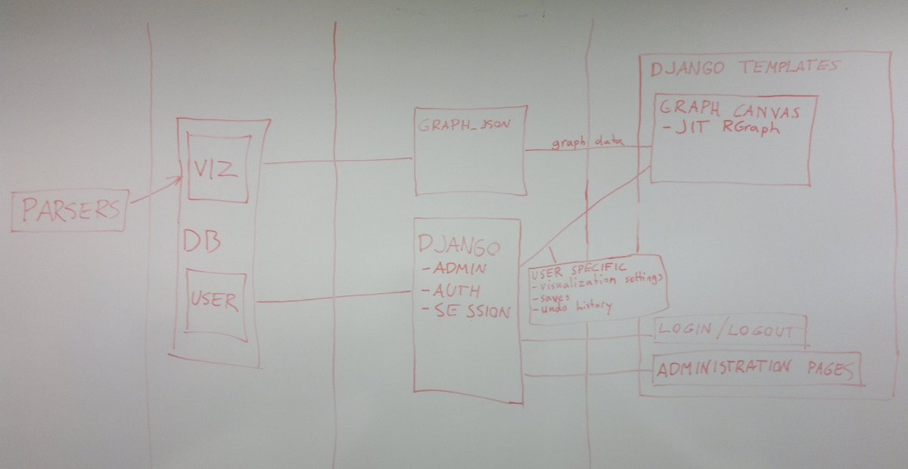

Program architecture is somewhat based on Django's Model-View-Template structure. Unfortunately this can cause some confusion as things that would be controller part in MCV architecture are now in view files.

Parsers are used for parsing data from text files to database. They are currently for command line use only. Scripts for using parsers are located in /scripts/, python code is in /src/geovision/text_to_db/
More information about scripts can be found in Script Documentation.
Database is essentially divided into two parts. Tables beginning with viz contain the actual data to be shown in the visualization. Tables beginning with user, auth and userdb contain django authentication and user specific data.
More information about database can be found in Database documentation.
This part of the program also maintains some separation between things controlled by Django (user authentication, user-specific data and sessions) and graph data.
Most data drawn to canvas and the information areas outside it are queried from database in graph_JSON.py in /src/geovision/text_to_db/. Directory /src/geovision/viz/ contains the Django database model for graph data and some additional queries for database information, such as enzyme name autocompletion.
User specific data is requested through Django's system for automatic session control and authentication.
This part of the program contains the actual pages as Django templates. More information about structure of the pages shown can be found in HttpUrlsDocumentation
Django template files can be found in /src/geovision/templates/, and the graph visualization JavaScript files are located in /src/geovision/static/
There is also a JSDoc for JavaScript code.